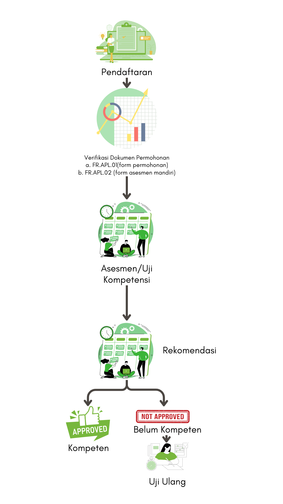

Bersertifikasi untuk
Masa Depan Pertanian
Mengukuhkan Kompetensi, Meningkatkan Daya Saing.
Selengkapnya ...Tentang kami
Indonesia sebagai negara agraris dengan potensi geografis dan agroklimat serta kesuburan tanahnya pernah mengalami swasembada pangan beras pad atahun 1984. Salah satu kunci suksesnya adalah peran penyuluh pertanian dan program intensifikasi pertanian yang dilaksanakan secara profesional, konsisten dan berkelanjutan. Kini profesi penyuluh pertanian menuju ketahanan pangan, kemandirian pangan dan kedaulatan pangan. Oleh karena itu telah hadir Lembaga Sertifikasi Profesi (LSP) Tani Nelayan Indonesia (Tanindo) untuk melaksanakan sertifikasi penyuluh pertanian agar eksistensinya lebih diakui serta perannya lebih besar bagi pembangunan pertanian di Indonesia. LSP Tanindo hadir untuk menjawab tantangan profesionalisme penyuluh dan petani Indonesia dengan sumberdaya manusia yang unggul, handal dan profesional. Kedepan Indonesia akan menjadi negara besar dengan ketahanan pangan yang kuat, produktivitas pertanian yang tinggi dan berkelanjutan.
Visi
Menjadi Lembaga Sertifikasi Profesi yang kompeten, kredibel, dan profesional dalam bidang pertanian.
Misi
Meningkatkan Kompetensi SDM Pertanian
Meningkatkan keterampilan dan pengetahuan tenaga kerja di sektor pertanian.
Melaksanakan Sertifikasi Profesi
Melaksanakan proses sertifikasi bagi SDM pertanian.
Kolaborasi dan Sinergi
Mengembangkan kerjasama antar pemangku kepentingan di bidang pertanian untuk menciptakan tenaga kerja yang kompeten dan kompetitif.
Tujuan kami
Meyakinkan Kompetensi
Membantu tenaga profesi meyakinkan kepada organisasi/industri/kliennya bahwa dirinya kompeten dalam bekerja atau menghasilkan produk atau jasa dan meningkatakan percaya diri tenaga profesi.
Merencanakan Karir
Membantu tenaga profesi dalam merencanakan karirnya dan mengukur tingkat pencapaian kompetensi dalam proses belajar di lembaga formal maupun secara mandiri.
Memenuhi Persyaratan Regulasi
Membantu tenaga profesi dalam memenuhi persyaratan regulasi.
Pengakuan Kompetensi Lintas Sektor dan Negara
Membantu pengakuan kompetensi lintas sektor dan lintas negara serta membantu tenaga profesi dalam promosi profesinya di pasar tenaga kerja.

Mengapa Sertifikasi Profesi Penting?
Nilai Sertifikat Profesi
Sertifikat profesi memiliki nilai yang diakui yang memberikan keuntungan dalam mencapai tujuan karir dan memperkuat posisi di tempat kerja.
Menjamin Kompetensi
Sertifikasi profesi bertujuan untuk memastikan kompetensi seseorang yang telah didapatkan melalui pembelajaran, pelatihan, maupun pengalaman kerja. Sertifikasi diberikan oleh Lembaga Sertifikasi Profesi (LSP) berlisensi dari BNSP (Badan Nasional Standarisasi Profesi).
Peran BNSP
BNSP adalah lembaga independen yang dibentuk pemerintah Republik Indonesia melalui Peraturan Pemerintah Nomor 23 Tahun 2004, dengan tugas pokok melaksanakan sertifikasi kompetensi kerja untuk berbagai profesi di Indonesia serta Peraturan Pemerintah (PP) Nomor 10 Tahun 2018 tentang Badan Nasional Sertifikasi Profesi.
Alur sertifikasi kompetensi
Alur RCC (Recognition Current Competency)

Didukung oleh
Alamat Kami
Sekretariat Vivo Business Park A31 Unit
I,
Jl. Pembangunan 3 Karang Anyar,
Neglasari,
Kota Tangerang, Banten 15121,
Telp. 021-5958 5665, 0817 6322 965
Hubungi kami
- Lsp Tanindo
- @lsp_tanindo
- @lsp.tanindo
- LSP Tanindo
- @LspTanindo
- admin@lsptanindo.com
© 2024 LSP Tanindo
This template is made with Love by
ThemeWagon